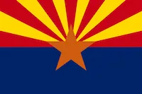

Rubia Magdalena Francesco
About Me
My name is Rubia and I go by Ruby. I was born in South Africa and live with my family in Madagascar. I am currently working as an administrative legal assistant at a law firm. My children are my world and I love spending time with them. I love to travel and I love to learn new things.

Toloria, Madagascar

Official Flag of Madagascar
Madagascar is the 4th largest island in the world and is located in the Indian Ocean. It is home to 5% of the world's plant and animal species, of which more than 80% are endemic to Madagascar. The island is best known for its lemurs, baobab trees, and vanilla.